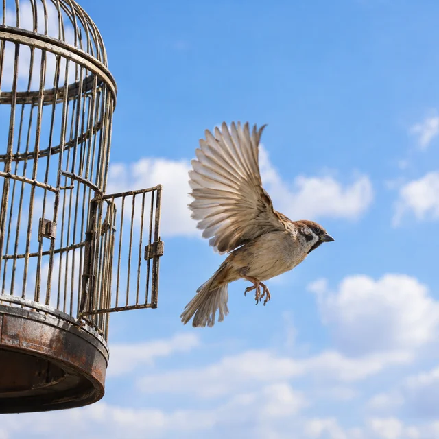
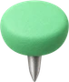
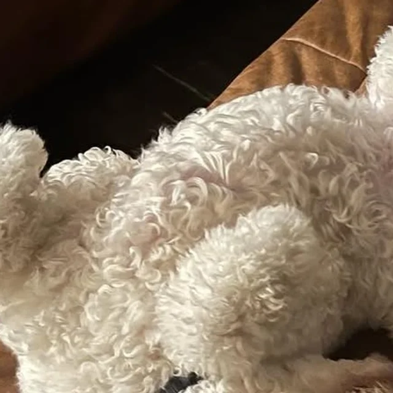
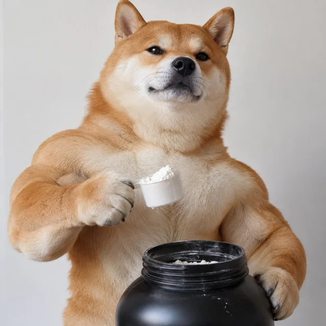

the bird is freed
Your agent isa serial dev now.
Open source. It watches X, Truth Social and the news, and launches the coin before anyone else.
connecting to pump.fun
0
How it works
Post to coin
in 22 seconds.
-
0:00
Elon Musk@elonmusk -
0:19

The Bird Is Freed
$BIRD
picture: the name, drawn by GPT Image
-
0:22
$BIRD LIVE
It reads the post, names the coin like a trench dev would, gets the picture, and launches. Same post dies? It launches it again.

X accountsElon and the accounts you pickTruth Socialevery Trump post
News desksthe name in the headline
Going viralposts blowing up right now
Trending on pumpnames three devs just launched
Sources
It reads
everything.
You sleep.
Tier S accounts get everything coined. News gets the person, company or quote. Trends get copied before they cool.
See the starter listPictures
The picture
is the name.
HE HAS A DOG CALLED MAX??

Grok will be superintelligent
id for creatine but not voting

could be impeached as soon as today
Real picture when one exists. A pun on the name when it doesn't. Same picture on every relaunch.
24s
median launch after the post, measured on 157 live launches, Nov 9 2026
The case file
- 01
- 0.1 SOL
- dev buy at launch, about 0.35% of supply
- 02
- 0.30%
- of every trade goes to the dev
- 03
- 2 SOL
- of trading pays a coin back
- 04
- 0:01
- the fastest devs we watched
- 05
- x3
- same post, third copy, sometimes the one that runs
Give your agent the job.
npm i -g github:gumballchief/serial-dev
claude mcp add serial-dev -- serial-dev-mcpnpm i -g github:gumballchief/serial-dev
claude mcp add serial-dev -- cmd /c serial-dev-mcpnpm i -g github:gumballchief/serial-dev
{ "mcpServers": { "serial-dev": { "command": "serial-dev-mcp" } } }Your agent checks its own setup first and tells you what to grab. To launch you need one free Pinata key. Watching X live adds a twitterapi.io key. Everything else is optional.